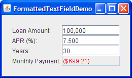
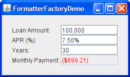

Lección: Usando Componentes Swing
Sección: Cómo Usar Varios Componentes
Cómo Usar Campos de Texto Formateado
Los campos de texto formateado ofrecen una forma a los desarrolladores de especificar el conjunto válido de
caracteres que pueden ser tecleados en un campo de texto. Específicamente, la clase
JFormattedTextField añade un formateador y un objeto valor a las
características heredadas desde la clase JTextField. El formateador traduce el valor del campo
al texto que visualiza, y el texto al valor del campo.
Usando los formateadores que Swing ofrece, puede configurar campos de texto formateado para escribir fechas y números en formatos localizados. Otra clase de formateador le habilita a usar una máscara de caracteres para especificar el conjunto de caracteres que pueden ser tecleados en cada posición en el campo. Por ejemplo, puede especificar una máscara para teclear números de teléfono en un formato particular, tal como (XX) X-XX-XX-XX-XX.
Si los valores posibles de un campo de texto formateado tienen un orden obvio, use un spinner en su lugar. Un contador numérico usa un campo de texto formateado por defecto, pero añade dos botones que habilitan al usuario elegir el valor en una secuencia.
Otra alternativa o adjunto al uso de un campo de texto formateado es instalar un verificador de entrada en el campo. El verificador de entrada del componente es llamado cuando el componente está cerca de perder el foco del teclado. El verificador de entrada le habilita a comprobar si el valor del componente es válido y opcionalmente lo cambia o detiene el foco de ser transferido.
Esta IGU usa campos de texto formateado para visualizar números en cuatro formatos diferentes.

Intente esto:
-
Pulse el botón Lanza para ejecutar FormattedTextFieldDemo usando
Java™ Web Start (
descargue KDJ 7 o posterior). Alternativamente, para compilar y ejecutar el ejemplo por usted
mismo, consulte el
the índice de ejemplos.

-
Experimente con diferentes montos de préstamos, tasas porcentales anuales (TAEs), y períodos de
prestamo.
Tenga en cuenta que siempre y cuando el texto que escriba sea válido, el campo Pago mensual se actualiza cuando presiona Intro o desplaza el foco del campo que está editando. -
Escriba texto no válido tal como "abcd" en el campo Monto del Préstamo y entonces presione
Intro.
El campo Mensualidad sigue siendo el mismo. Cuando usted mueve el foco desde el campo Monto del Prestamo, el texto revierte al último valor válido del campo. -
Escriba texto marginalmente válido tal como "2000abcd" en el campo Cantidad del préstamo y
presione Intro.
El campo Mensualidad es actualizado, aunque el campo Monto del Préstamo aun visualiza2000abcd. Cuando mueve el foco desde el campo Monto del Préstamo, el texto que visualiza se actualiza a una versión bien formateada de su valor, por ejemplo, "2,000".
Puede encontrar el código completo para este programa en
FormattedTextFieldDemo.java
amountField = new JFormattedTextField(amountFormat);
amountField.setValue(new Double(amount));
amountField.setColumns(10);
amountField.addPropertyChangeListener("value", this);
...
amountFormat = NumberFormat.getNumberInstance();
El constructor usado para crear el objeto amountField toma un argumento
java.text.Format. El objeto Format es usado por el formateador del campo para traducir
el valor del campo a texto y el texto al valor del campo.
El código restante configura el objeto amountField. El método setValue establece la
propiedad valor del campo a un número en punto-flotante representado como un objeto Double. El
método setColumns, heredado de la clase JTextField, aconseja sobre el tamaño preferido
del campo. La llamada al método addPropertyChangeListener registra un oyente para la propiedad
valor del campo, de forma que el programa pueda actualizar el campo Mensualidad cada vez que el usuario cambia
el monto del préstamo.
El resto de esta sección cubre los siguientes tópicos:
- Crear e Inicializar Campos de Texto Formateado
- Establecer y Obtener los Valores del Campo
- Especificar Formatos
- Usar MaskFormatter
- Especificar Formateadores y Usar Factorías de Formateadores
Esta sección no explica la IPA heredad de la clase JTextField. La IPA es descrita en
Cómo Usar Campos de Texto.
Crear e Inicializar Campos de Texto Formateado
El código siguiente crea e inicializa los tres campos restantes en el ejemplo
FormattedTextFieldDemo.
rateField = new JFormattedTextField(percentFormat);
rateField.setValue(new Double(rate));
rateField.setColumns(10);
rateField.addPropertyChangeListener("value", this);
numPeriodsField = new JFormattedTextField();
numPeriodsField.setValue(new Integer(numPeriods));
numPeriodsField.setColumns(10);
numPeriodsField.addPropertyChangeListener("value", this);
paymentField = new JFormattedTextField(paymentFormat);
paymentField.setValue(new Double(payment));
paymentField.setColumns(10);
paymentField.setEditable(false);
paymentField.setForeground(Color.red);
...
percentFormat = NumberFormat.getNumberInstance();
percentFormat.setMinimumFractionDigits(2);
paymentFormat = NumberFormat.getCurrencyInstance();
El código para configurar el objeto rateField es casi idéntico al código mostrado previamente para
otros campos. La única diferencia es que el formato es ligeramente diferente, gracias al código
percentFormat.setMinimumFractionDigits(2).
El código que crea el objeto numPeriodsField no establece explícitamente un formato o formateador.
En vez de eso, establece el valor a un Integer y habilita el campo a usar el formateador por
defecto para los objetos Integer. El código no hizo esto en los dos campos anteriores porque el
formateador por defecto no estaba siendo usado para los objetos Double. El resultado no fue el que
era necesario. Cómo especificar formatos y formateadores se cubre más tarde en esta sección.
El campo pago es diferente de los otros campos porque es no editable, usa un color diferente para su texto, y no
tiene un oyente de cambio de propiedad. De otra manera, es idéntico a los otros campos. Podríamos haber elegido
usar un campo de texto o etiqueta en su lugar. Sea cual
sea el componente, podríamos utilizar el método paymentFormat para analizar el importe del pago en
el texto que se va a mostrar.
Establecer y Obtener los Valores del Campo
Tenga en cuenta lo siguiente cuando use un campo de texto formateado:
El texto de un campo de texto formateado y su valor son dos propiedades diferentes, y el valor a menudo suele estar a la zaga del texto.
La propiedad text está definida por la clase JTextField. Esta propiedad siempre refleja
lo que el campo visualiza. La propiedad value, definida por la clase JFormattedTextField,
podría no reflejar el último texto visualizado en el campo. Mientras el usuario está tecleando, la propiedad
text cambia, pero la propiedad value no cambia hasta que los cambios son enviados.
Para ser más preciso, el valor de un campo de texto formateado puede ser establecido usando o el método
setValue o el método commitEdit. El método setValue establece el valor al
argumento especificado. El argumento puede técnicamente ser cualquier Object, pero el formateador
necesita ser capaz de convertirlo en una cadena. De lo contrario, el campo de texto no visualiza ninguna
información sustantiva.
El método commitEdit establece el valor en cualquier objeto que el formateador determine que esté
representado por el texto del campo. El método commitEdit se llama automáticamente cuando ocurre
lo siguiente:
- Cuando el usuario presiona Intro mientras el campo tiene el foco.
-
Por defecto, cuando el campo pierde el foco, por ejemplo, cuando el usuario presiona la tecla Tab para
cambiar el foco a otro componente. Puede usar el método
setFocusLostBehaviorpara especificar un resultado diferente cuando el campo pierde el foco.
Nota:
Algunos formateadores podrían actualizar el valor constantemente, haciendo la pérdida de foco sin sentido, ya que el valor es siempre el mismo que lo que el texto especifica.
Cuando establece el valor de un campo de texto formateado, el texto del campo es actualizado para reflejar el valor. Exactamente cómo se representa el valor como texto depende del formateador del campo.
Note que aunque la clase JFormattedTextField hereda el método setText de la clase
JTextField, usted no llama usualmente el método setText en un campo de texto
formateado. Si lo hace, la visualización del campo cambia en consecuencia pero el valor no es actualizado (a
menos que el formateador del campo lo actualize constantemente).
Para obtener el valor actual de un campo de texto formateado, use el método getValue. Si es
necesario, puede asegurarse que el valor refleje el texto llamando al método commitEdit antes de
getValue. Ya que el método getValue devuelve un Object, necesita
moldearlo al tipo usado por el valor de su campo. Por ejemplo:
Date enteredDate = (Date)dateField.getValue();
Para detectar cambios en el valor de un campo de texto formateado, puede regsitrar un oyente de cambio de
propiedad en el campo de texto formateado para escuchar los cambios a la propiedad "valor". El oyente
de cambio de propiedad es tomado del ejemplo FormattedTextFieldDemo:
//El oyente de cambio de propiedad es registrado en cada
//campo usando código como este:
// someField.addPropertyChangeListener("value", this);
/** Llamado cuando la propiedad "valor" de un campo cambia. */
public void propertyChange(PropertyChangeEvent e) {
Object source = e.getSource();
if (source == amountField) {
amount = ((Number)amountField.getValue()).doubleValue();
} else if (source == rateField) {
rate = ((Number)rateField.getValue()).doubleValue();
} else if (source == numPeriodsField) {
numPeriods = ((Number)numPeriodsField.getValue()).intValue();
}
double payment = computePayment(amount, rate, numPeriods);
paymentField.setValue(new Double(payment));
}
Especificar Formatos
La clase
Format ofrece una
forma de formatear información sensitiva al área regional tales como las fechas y los números. Los formateadores
que descienden de la clase
InternationalFormatter, tales como las clases
DateFormatter y
NumberFormatter, usan objetos Format para traducir entre el texto del campo y
el valor. Puede obtener un objeto Format llamando a uno de los métodos factoría en la clase
DateFormat o la
clase
NumberFormat
, o usando uno de los constructores
SimpleDateFormat.
Nota:
Una tercera clase formateadora comunmente usada, MaskFormatter, no desciende de la clase
InternationalFormatter y no usa formatos. La clase MaskFormatter es descrita en
Usar MaskFormatter.
Puede personalizar ciertos aspectos del formato cuando crea el objeto Format, y otros a través de
una IPA específica del formato. Por ejemplo, los objetos
DecimalFormat
, loa cuales heredan de NumberFormat y son a menudo devueltos por sus métodos factoría, pueden ser
personalizados usando los métodos setMaximumFractionDigits y setNegativePrefix. Para
información sobre el uso de objetos Format, vea la lección
Formateo del recorrido
Internacionalización.
La forma más facil de asociar un formato personalizado con un campo de texto formateado es crear el campo usando
el constructor de JFormattedTextField que toma un Format como un argumento. Puede ver
esta asociación en los ejemplos de código previo que crean los objetos amountField y
rateField.
Usar MaskFormatter
La clase
MaskFormatter implementa un formateador que especifica exactamente que caracteres son
válidos en cada posición del texto del campo. Por ejemplo, el código siguiente crea un
MaskFormatter que permite al usuario teclear un código postal de cinco dígitos:
zipField = new JFormattedTextField(
createFormatter("#####"));
...
protected MaskFormatter createFormatter(String s) {
MaskFormatter formatter = null;
try {
formatter = new MaskFormatter(s);
} catch (java.text.ParseException exc) {
System.err.println("formatter is bad: " + exc.getMessage());
System.exit(-1);
}
return formatter;
}
Puede probar los resultados del código precendete ejecutando TextInputDemo. Pulse el botón Lanza
para ejecutar TextInputDemo usando
Java™ Web Start (
descargue KDJ 7 o posterior).
Alternativamente, para compilar y ejecutar el ejemplo por usted mismo, consulte el
índice de ejemplos.
La IGU del programa es visualizada.

La siguiente tabla muestra los caracteres que puede usar en la máscara de formateo:
| Carácter | Descripción |
|---|---|
| # | Cualquier número válido (Character.isDigit). |
|
'
(comilla simple) |
Caracter de escape, usado para escapar cualquier de los caracteres de formato especiales. |
| U |
Cualquier carácter (Character.isLetter). Todas las letras minúsculas son convertidas a
mayúsculas.
|
| L |
Cualquier carácter (Character.isLetter). Todas las letras mayúsculas son convertidas a
minúsculas.
|
| A |
Cualquier carácter o número (Character.isLetter o Character.isDigit).
|
| ? | Cualquier carácter (Character.isLetter). |
| * | Cualquier cosa. |
| H | Cualquier caráctere hexadecimal (0-9, a-f or A-F). |
Especificar Formateadores y Usar Factorías de Formateadores
Cuando se especifican formateadores, tenga en mente que cada objeto formateados puede ser usado como máximo por un campo de texto formateado a la vez. Cada campo debería tener al menos un formateador asociado con el, de los cuales uno exactamente es usado en cualquier momento.
Puede especificar los formateadores a ser usado por campo de texto formateado de varias formas:
-
Usar el constructor de
JFormattedTextFieldque toma un argumentoFormat.
Un formateador para el campo es creado automáticamente que usa el formato especificado. -
Usar el constructor de
JFormattedTextFieldque toma un argumentoJFormattedTextField.AbstractFormatter.
El formateador especificado es usado para el campo. -
Establecer el valor de un campo de texto formateado que no tiene formato, formateador, o factoría de
formateador especificada.
Un formateador es asignado al campo por la factoría de formateadores por defecto, usando el tipo del valor del campo como guía. Si el valor es unaDate, el formateador es unDateFormatter. Si el valor es unNumber, el formateador es unNumberFormatter. Otros tipos resultan en una instancia delDefaultFormatter. -
Hacer que el campo de texto formateado use una factoría de formateadores que devuelva objetos
formateadores personalizados.
Esta es la opción más flexible. Es útil cuando quiere asociar más de un formateador con un campo o añadir una nueva clase de formateador a ser usado por múltiples campos. Un ejemplo del uso anterior es un campo que interpreta al usuario escribiendo de cierta manera pero muestra el valor (cuando el usuario no está escribiendo) de otra manera. Un ejemplo del último uso son varios campos con valores de clase personalizados, por ejemplo,PhoneNumber. Puede configurar los campos para que usen una factoría de formateadores que devuelvan formateadores especializados para números de teléfono.
Puede establecer una factoría de formateadores de campo o creando el campo usando un constructor que tome un
argumento de factoría de formateador, o llamando al método setFormatterFactory en el campo. Para
crear una factoría de formateadores, puede a menudo usar una instancia de la clase
DefaultFormatterFactory. Un objeto DefaultFormatterFactory le capacita para
especificar los formateadores devueltos cuando un valor esté siendo editado, no esté siendo editado, o tenga
un valor nulo.
Las siguientes figuras muestran una aplicación basada en el ejemplo FormattedTextFieldDemo que usa
factorías de formateadores para establecer editores múltiples para los campos Monto de Préstamo y APR. Mientras
el usuario está editando el Monto del Préstamo, el carácter $ no es usado así que el usuario no está forzado a
escribirlo. Similarmente, mientras el usuario está editando el campo APR, el carácter % no es requerido.
Pulse el botón Lanza para ejecutar FormatterFactoryDemo usando Java™ Web Start ( descargue KDJ 7 o posterior). Alternativamente, para compilar y ejecutar el ejemplo por usted mismo, consulte el índice de ejemplo.


El código siguiente que crea los formateadores y los comfigura usando instancias de la clase
DefaultFormatterFactory :
private double rate = .075; //7.5 %
...
amountField = new JFormattedTextField(
new DefaultFormatterFactory(
new NumberFormatter(amountDisplayFormat),
new NumberFormatter(amountDisplayFormat),
new NumberFormatter(amountEditFormat)));
...
NumberFormatter percentEditFormatter =
new NumberFormatter(percentEditFormat) {
public String valueToString(Object o)
throws ParseException {
Number number = (Number)o;
if (number != null) {
double d = number.doubleValue() * 100.0;
number = new Double(d);
}
return super.valueToString(number);
}
public Object stringToValue(String s)
throws ParseException {
Number number = (Number)super.stringToValue(s);
if (number != null) {
double d = number.doubleValue() / 100.0;
number = new Double(d);
}
return number;
}
};
rateField = new JFormattedTextField(
new DefaultFormatterFactory(
new NumberFormatter(percentDisplayFormat),
new NumberFormatter(percentDisplayFormat),
percentEditFormatter));
...
amountDisplayFormat = NumberFormat.getCurrencyInstance();
amountDisplayFormat.setMinimumFractionDigits(0);
amountEditFormat = NumberFormat.getNumberInstance();
percentDisplayFormat = NumberFormat.getPercentInstance();
percentDisplayFormat.setMinimumFractionDigits(2);
percentEditFormat = NumberFormat.getNumberInstance();
percentEditFormat.setMinimumFractionDigits(2);
El código en negrita resalta las llamadas a los constructores de DefaultFormatterFactory. El primer
argumento al constructor especifica el formateador por defecto a usar para el campo de texto formateado. El
segundo argumento especifica el formateador de visualización, el cual es usado cuando el campo no tiene el foco.
El tercer argumento especifica el formateador de edición, el cual es usado cuando el campo tiene el foco. El
código no usa un cuarto argumento, pero si lo hiciera, el cuarto argumento especificaría el formateador nulo, el
cual es usado cuando el valor del campo es nulo. Ya que no se especificón ningún formateador nulo, el
formateador por defecto es usado cuando el valor es nulo.
El código personaliza el formateador que usa percentEditFormat creando una subclase de la clase
NumberFormatter. Esta subclase sobreescribe los métodos valueToString y
stringToValue de NumberFormatter de forma que puedan convertir el número visualizado
al valor usado actualmente en los cálculos, y convertir el valor a un número. Específicamente, el número
visualizado es 100 veces el valor actual. La razón es que el formato de porcentaje usado por el formateador de
visualización automáticamente visualiza el texto como 100 veces el valor, así el formateador de edición
correspondiente debe visualizar el texto con el mismo valor. El ejemplo FormattedTextFieldDemo
no necesita cuidarse de esta conversión porque esta demo usa sñolo un formato para la visualación y la edición.
Puede encontrar el código para el programa completo en
FormatterFactoryDemo.java
La IPA del Campo de Texto Formateado
Las siguientes tablas listan algunos de las IPAs usadas comunmente en el uso de los campos de texto formateado.
- Clases Relativas a Campos de Texto Formateado
- Métodos de JFormattedTextField
- Opciones de DefaultFormatter
| Clase o Interfaz | Propósito |
|---|---|
| JFormattedTextField |
Subclase de JTextField que soporta el formateao de valores arbitrarios.
|
| JFormattedTextField.AbstractFormatter |
La superclase de todos los formateadores para JFormattedTextField. Un formateador impone
políticas de edición y políticas de navegación, maneja conversiones de cadena a objeto y manipula el
JFormattedTextField según sea necesario para hacer cumplir la directiva deseada.
|
| JFormattedTextField.AbstractFormatterFactory |
La superclase de todas las factorías de formataadores. Cada JFormattedTextField usa una
factoría de formateaador para obtener el formateador que mejor corresponda al estado del campo de texto.
|
| DefaultFormatterFactory | La factoría de formateador normalmente usada. Ofrece formateadores basados en detalles tales como los parámetros pasados y el estado del foco. |
| DefaultFormatter |
Subclase de JFormattedTextField.AbstractFormatter que formatea objetos arbitrarios usando
el método toString.
|
| MaskFormatter |
Subclase de DefaultFormatter que formatea y edita cadenas usando una máscara de caracteres
especificada. (Por ejemplo, números de telefono de siete dígitos pueden ser especificados usando
"###-####").
|
| InternationalFormatter |
Subclase de DefaultFormatter que usa una instancia de java.text.Format para
manejar la conversión a y desde una Cadena.
|
| NumberFormatter |
Subclase de InternationalFormatter que soporta formatos de número usando una instancia de
NumberFormat.
|
| DateFormatter |
Subclase de InternationalFormatter que soporta formatos de fecha usando una instancia de
DateFormat.
|
| Método o Constructor | Propósito |
|---|---|
|
JFormattedTextField()
JFormattedTextField(Object) JFormattedTextField(Format) JFormattedTextField(AbstractFormatter) JFormattedTextField(AbstractFormatterFactory) JFormattedTextField(AbstractFormatterFactory, Object) |
Crea un campo de texto formateado nuevo. El argumento Object, si está presenta, especifica
el valor inicial del campo y causa que una factoría de formateador apropiada sea creada. El argumento
Format o AbstractFormatter especifica el formato o formateador a ser utilizado
por el campo, y causa que una factoría de formateador apropiada sea creada. El argumento
AbstractFormatterFactory especifica la factoría de formateador a ser usada, la cual
determina que formateadores son usados para el campo.
|
|
void setValue(Object)
Object getValue() |
Establece u obtiene el valor del campo de texto formateado. Debe moldear el tipo devuelto basado en
cómo JFormattedTextField ha sido configurado. Si el formateador no ha sido configurado
aún, llamar a setValue establece el formateador a uno devuelto por la factoría de
formateadores del campo.
|
| void setFormatterFactory(AbstractFormatterFactory) |
Establece el objeto que determina los formateadores usados para el campo de texto formateado. El objeto
es a menudo una instancia de la clase DefaultFormatterFactory.
|
| AbstractFormatter getFormatter() |
Obtiene el formateador del campo de texto formateado. El formateador es a menudo una instancia de la
clase DefaultFormatter.
|
| void setFocusLostBehavior(int) |
Especifica el resultado de un campo que pierde el foco. Los valores posibles están definidos en
JFormattedTextField como COMMIT_OR_REVERT (por defecto), COMMIT
(confirma si es válido, de otra forma dejar todo igual), PERSIST (no hacer nada), y
REVERT (cambia el texto para reflejar el valor).
|
| void commitEdit() |
Establece el valor del objeto representado por el texto del campo, como está determinado por el
formateador del campo. Si el texto no es válido, el valor permanece igual y una
ParseException es lanzada.
|
| boolean isEditValid() | Devuelve verdadero si el formateador considera que el texto actual es válido, como está determinado por el formatador del campo. |
| Método | Propósito |
|---|---|
|
void setCommitsOnValidEdit(boolean)
boolean getCommitsOnValidEdit() |
Sets or obtains values when edits are pushed back to the JFormattedTextField. If
true, commitEdit is called after every valid edit. This property is
false by default.
|
|
void setOverwriteMode(boolean)
boolean getOverwriteMode() |
Sets or obtains the behavior when inserting characters. If true, new characters overwrite
existing characters in the model as they are inserted. The default value of this property is
true in DefaultFormatter (and thus in MaskFormatter) and
false in InternationalFormatter (and thus in DateFormatter and
NumberFormatter).
|
|
void setAllowsInvalid(boolean)
boolean getAllowsInvalid() |
Sets or interprets whether the value being edited is allowed to be invalid for a length of time. It is
often convenient to enable the user to type invalid values until the commitEdit method is
attempted. DefaultFormatter initializes this property to true. Of the standard
Swing formatters, only MaskFormatter sets this property to false.
|
Ejemplos Que Usan Campos de Texto Formateado
Esta tabla lista los ejemplos que usan campos de texto formatados y apunta a dónde esos ejemplos están descritos.
| Ejemplo | Dónde está Descrito | Notas |
| FormattedTextFieldDemo | Esta sección | Usa cuatro campos de texto formateados. |
| SpinnerDemo | Cómo Usar los Contadores Numéricos | Personaliza la apariencia de los campos de texto formateados con dos spinners. |
| Converter | Usando Modelso | Cada ConversionPanel empareja un campos de texto formateado con un deslizador. |
| TextInputDemo | Esta sección |
Muestra cómo usar campos de texto, spinners, y campos de texto formateados juntos, y demuestra cómo
usar MaskFormatter. Incluye código para seleccionar el texto del campo que acaba de recibir
el foco.
|
| FormatterFactoryDemo | Esta sección | Una variación de FormattedTextFieldDemo que usa factorías de formateadores para especificar múltiples formateadores para los dos campos de texto formateado. |